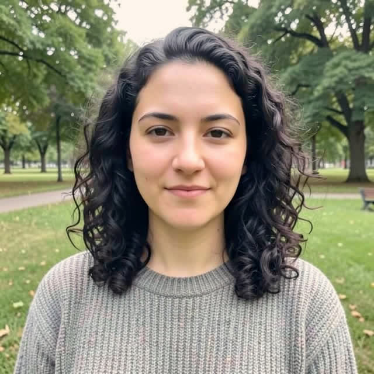
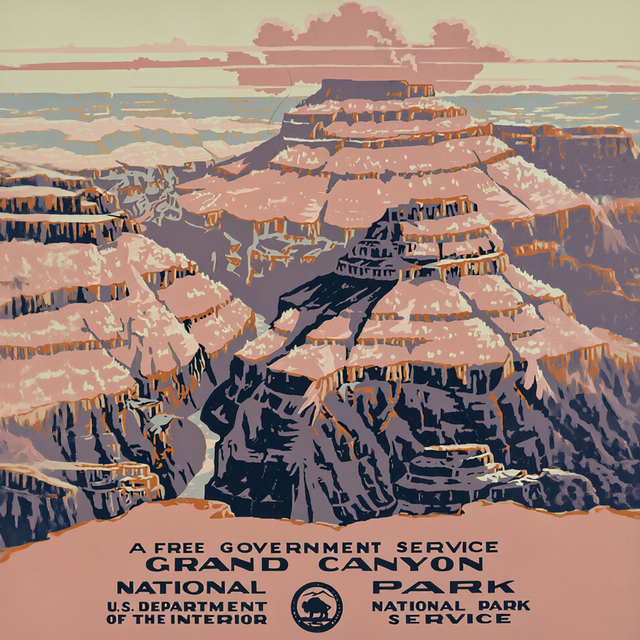
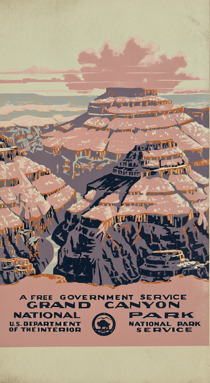
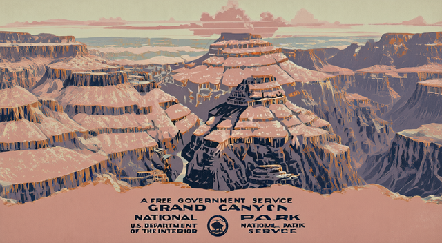

Join these two clips in this order with a soft dissolve between them.
V4 join_videos · 0 cr · asked: nothing
MCP no creation call · 0 cr · 14 s
made nothing; it said: I can’t directly join clips with the connected Magic Hour tools—they don’t support timeline editing or dissolves.
In a video editor, place **barber-seed.mp4** first, then **v4-classroom-wipe.mp4**, and add a **0.5-second cross-dissolve** at the cut. This will blend them softly in the requested order.
D06 · Warmer, pixel-identical otherwise
Make this photo slightly warmer in tone; everything else must stay pixel-identical: same person, framing, background.
V4 adjust_image · 0 cr · asked: nothing

MCP no creation call · 0 cr · 15 s
made nothing; it said: To keep everything else pixel-identical, this needs a **non-generative color adjustment**. The connected Magic Hour editor regenerates pixels, so I can’t guarantee your exact-preservation requirement with it.
In a photo editor, increase **Temperature/Warmth slightly**—about +3 to +5 on a −100 to +100 scale—and leave all other controls unchanged. Export as PNG to avoid additional JPEG compression changes.
I haven’t modified your photo.
D07 · Resize to three sizes
Resize this poster into three files: 1:1 for a feed post, 9:16 for a story, 16:9 for a banner; keep the whole poster visible with padding, no cropping, no regeneration.
V4 resize_image · 30 cr · asked: nothing

1:1

9:16

16:9
reflow: This illustrated poster must be re-composed for each shape to preserve its canyon artwork, emblem, and every word without cropping.
MCP no creation call · 0 cr · 17 s
made nothing; it said: The connected Magic Hour tools don’t support **resize-and-pad without regeneration**, so I can’t create those three files here while respecting your instructions. I won’t use an AI editor to redraw your poster.
This Pillow script creates all three locally, keeping the **entire poster visible**, centered on cream padding, with no cropping or AI generation:
```python
from PIL import Image, ImageOps
poster = ImageOps.exif_transpose(Image.open("v4-poster.jpg")).convert("RGB")
outputs = {
"poster-feed-1x1.png": (1080, 1080),
"poster-story-9x16.png": (1080, 1920),
"poster-banner-16x9.png": (1920, 1080),
}
for filename, size in outputs.items():
fitted = ImageOps.contain(poster,
D08 · Underspecified poster: must ask for the words and the size before spending
A printed poster (portrait) and a Facebook post version for a garage sale; the words exactly: 'Garage Sale', 'Saturday 9am', '14 Elm St'.
E01 · Edit existing clips together with music and a title
Edit these four clips into one video in this order: lions, penguins, giraffe, logo card; soft dissolves between them; light upbeat family music underneath; the title 'Ridgeview Zoo · This weekend' at the start.
V4 join_videos · 44 cr · asked: nothing
MCP no creation call · 0 cr · 22 s
made nothing; it said: I can help plan this, but the connected Magic Hour tools don’t support joining multiple clips, adding timeline dissolves, or mixing music beneath them. I can’t produce the finished edit here without recreating rather than preserving your footage.
For a video editor such as CapCut, iMovie, or Premiere, use this edit plan:
- **Sequence:** lions → penguins → giraffe → logo card.
- **Transitions:** 0.5-second cross-dissolves between clips.
- **Opening title:** “Ridgeview Zoo · This weekend” over the first 3 seconds, with a gentle fade in/out.
- **Music:** light, upbeat instrumental—acoustic guitar, ukulele, or soft percussion—kept low beneath any animal sounds.
- **Ending:** hold the logo card